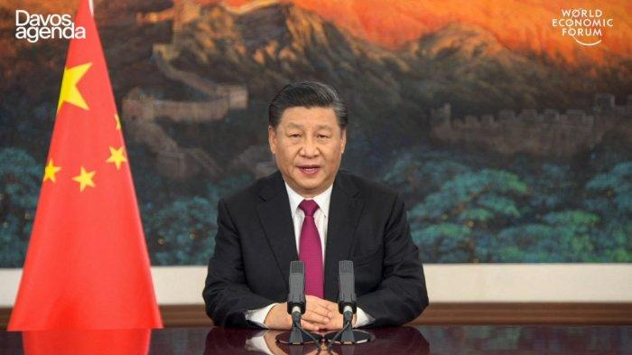

Penulis:Fitri Wulandari
Editor:Muhammad Zulfikar

Desas-desus kudeta terhadap Presiden China Xi Jinping yang ramai diperbincangkan di internet sepanjang Sabtu lalu dihentikan, setelah dilakukannya penyelidikan dan analisis dunia maya oleh analis intelijen.Putusannya adalah bahwa gerakan pasukan militer China, yang diklaim berdampak pada pembatalan penerbangan besar-besaran negara itu adalah hal yang tidak benar. Dikutip dari laman www.tribuneindia.com, Selasa (27/9/2022), semua isu ini dimulai saat 'wartawan lepas' Jennifer Zeng memperkuat dugaannya dalam bahasa Inggris terkait rumor yang beredar di Twitter berbahasa Mandarin sejak 21 September lalu.Sesaat setelah itu, ada satu kabar yang mengklaim bahwa mantan Presiden dan Perdana Menteri (PM) telah membujuk mantan anggota Komite Tetap Song Ping untuk mengambil kendali Biro Pengawal Pusat pada malam itu.
Sedangkan Presiden Xi Jinping dikabarkan ditahan di bandara, setelah kembali dari KTT Samarkand pada 16 September lalu. Ada rincian yang menunjukkan bahwa sesuatu yang jahat sedang terjadi, grafik palsu pun dibuat untuk menunjukkan bahwa penerbangan telah dibatalkan di China.
Begitu pula munculnya sebuah video ledakan besar yang menunjukkan adanya pertempuran sengit di Beijing, serta video pendek lainnya menunjukkan gerakan pasukan militer yang diklaim menuju Zhongnanhai, markas besar Komite Sentral Partai Komunis China.Analis intelijen pun secara cepat membantah klaim ini, visual dari ledakan tersebut dilacak dan ternyata terkait dengan salah satu peristiwa yang terjadi di Tianjin pada 2015.Sedangkan situs web pelacakan penerbangan, salah satunya diambil secara singkat oleh grafik palsu, padahal fakta menunjukkan bahwa semua normal di langit di atas China.Begitu pula dengan video gerakan pasukan yang ditemukan 'ternyata tidak berhubungan'. Analis intelijen menemukan bahwa sejumlah akun dengan pengikut yang sangat rendah, bertindak sebagai penyebar utama rumor kudeta Xi Jinping.Mengingat adanya ketegangan hubungan dengan China, beberapa akun Twitter sayap kanan dari India turut melakukan retweet banyak klaim kudeta yang memunculkan perdebatan.
Sedangkan situs web pelacakan penerbangan, salah satunya diambil secara singkat oleh grafik palsu, padahal fakta menunjukkan bahwa semua normal di langit di atas China. Begitu pula dengan video gerakan pasukan yang ditemukan 'ternyata tidak berhubungan'.Analis intelijen menemukan bahwa sejumlah akun dengan pengikut yang sangat rendah, bertindak sebagai penyebar utama rumor kudeta Xi Jinping.Mengingat adanya ketegangan hubungan dengan China, beberapa akun Twitter sayap kanan dari India turut melakukan retweet banyak klaim kudeta yang memunculkan perdebatan.